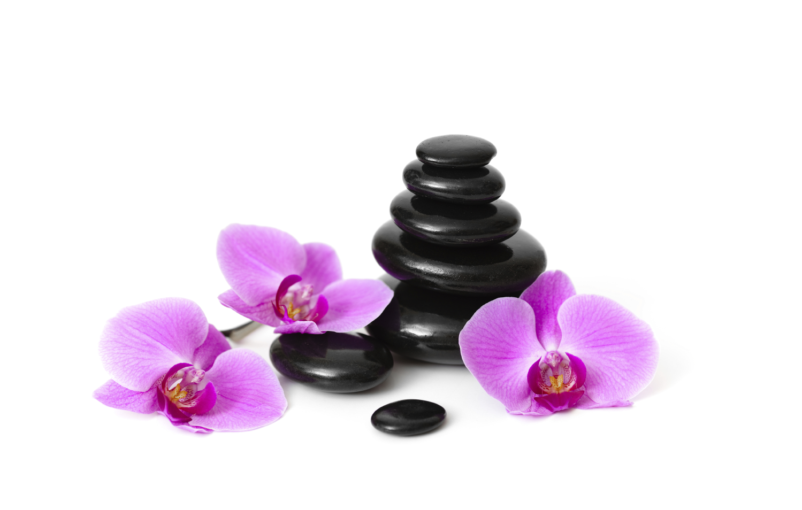

Излюбленная курортная процедура, которая в основном применяется при заболеваниях двигательного аппарата. Эта процедура всегда является удачным дополнением к основному курсу там, где нужно расслабить напряженные мышцы, провести лечение болезненных соединительных тканей или же подготовить пациента к лечебной физкультуре. Хотя массаж имеет и свои противопоказания, о которых нужно помнить. Противопоказания: послеоперационные осложнения в полости брюшины и грудины, варикоз нижних конечностей, осложнения кровообращения и кровотечения.
При проведении точечного массажа выявляются биологически активные точки на теле. Надавливая на них, выделяются вещества эндоморфины, действие которых подобно действию гормонов. В зависимости от техники воздействия на локальную точку, массаж может быть возбуждающим или успокаивающим. Точечный массаж используется практически при всех нарушениях мышечного тонуса, также при болях мышечного, суставного характера, где необходимо достичь расслабления, релаксации, успокоения.
Стимуляция акупрессурных точек на поверхности стопы. С помощью специальной массажной техники возможно положительное влияние на внутренние органы, установление вегетативного равновесия, ускорение заживления ран и уменьшение болей. Этот вид массажа рекомендуется при бессоннице, депрессиях, а также для общего улучшения состояния организма.